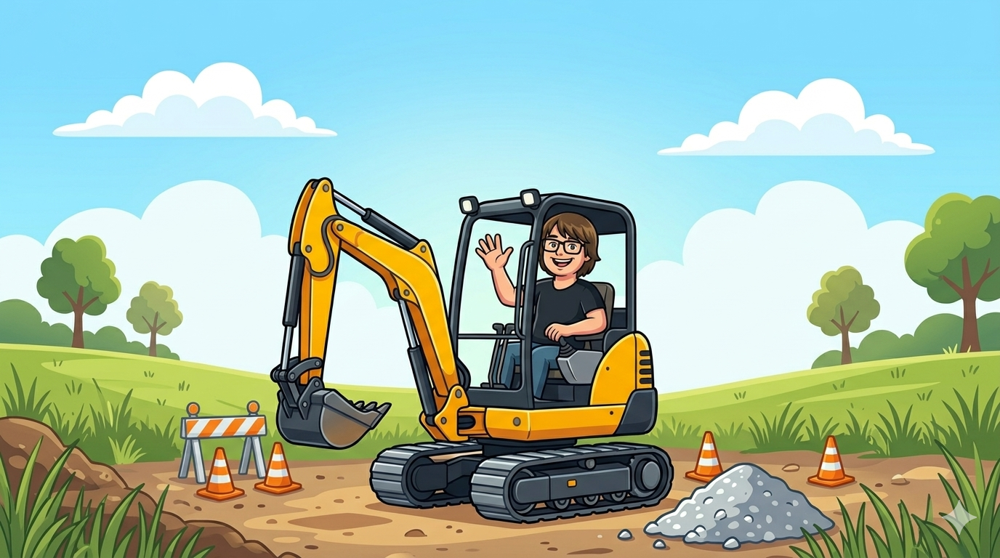
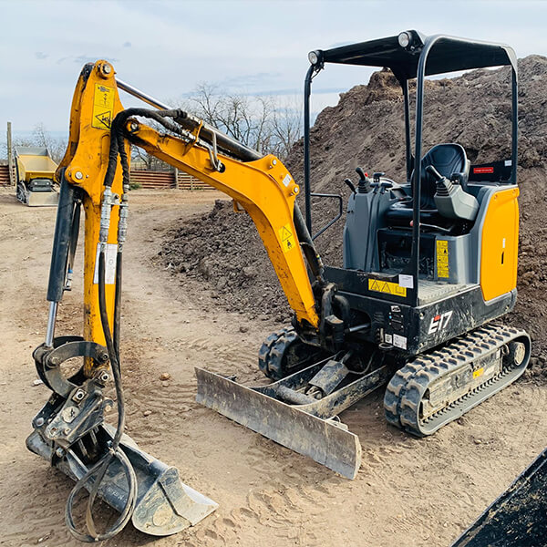
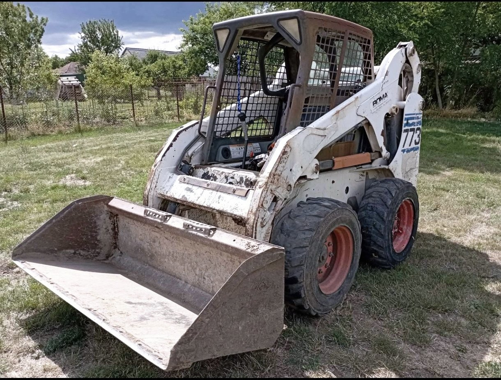
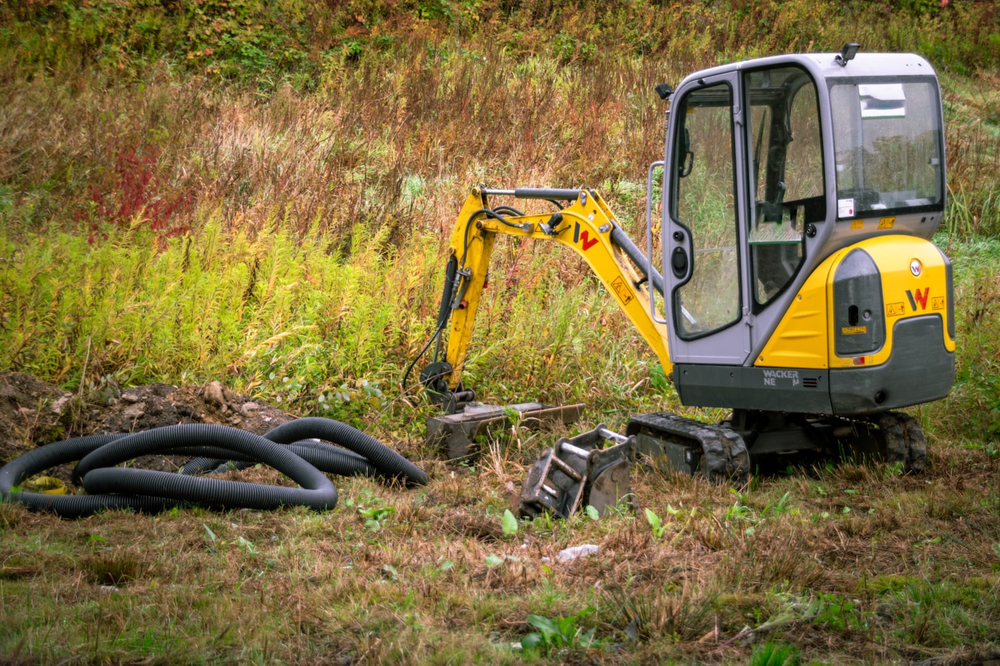
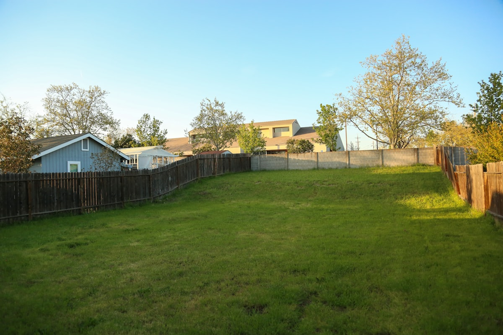
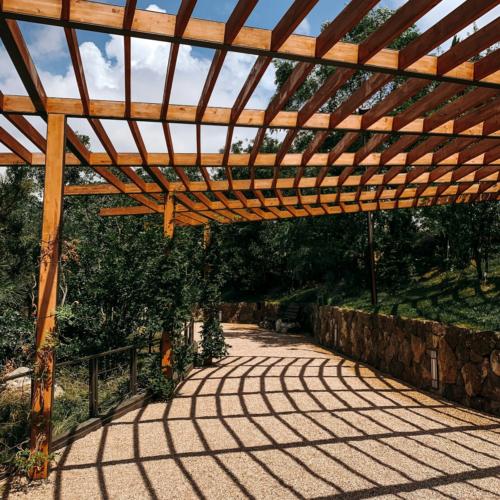

Azokra a munkákra fókuszálok, ahol fontos, hogy valaki visszahívjon, kijöjjön, megnézze, és tényleg megcsinálja azt, amit megbeszéltetek. Nem autópályát építek, hanem kisebb, jól körülírható feladatokat oldok meg.
SZOMBATHELY + KÖRNYÉKE
Monitor után markoló. Ez a hétvégi verzióm.
Lugosi Dömötör vagyok. Informatikusként napi 14 órát ülök és számítózok, úgyhogy kellett valami nagyon más. Így lett a DilóDömper: hétvégi kisebb földmunkák, tereprendezések és gépi pakolások, normális egyeztetéssel és vállalható végeredménnyel.
Hétvégi időpontok
Kisebb munkákra optimalizálva
Minikotró + Bobcat
+36 70 243 3530

dilódömper / hétvégi műszak
2
gép a gépparkban
4+
órás minimum meló
1
ember, akivel lehet beszélni
RÖVIDEN
Nem komplett kivitelező cég, hanem korrekt hétvégi földmunka.
GÉPPARK
Két gép. Két külön szerep. Nulla felesleges körítés.

Lánctalpas minikotró
Precízebb földmunkára
Árokásás, nyomvonal, tereprendezés, kerti előkészítés. Ahol fontosabb a kontroll, mint a vak tempó, ott ez dolgozik.
- Árok és nyomvonal
- Tereprendezés
- Kisebb alapelőkészítés

Bobcat
Pakolni, tolni, rendezni
Ha anyagot kell mozgatni, teríteni vagy gyorsan rendbe rakni egy udvart vagy telket, akkor a Bobcat a praktikus választás.
- Anyagmozgatás
- Murva és föld terítés
- Gyorsabb rendezési munka
SZOLGÁLTATÁSOK
Ilyen feladatokra érdemes gondolni.
01
Tereprendezés
Udvar, kert, telekrész szintbe hozása, kisebb földmozgatás és rendezés.
02
Árokásás
Öntözéshez, kábelhez, vízelvezetéshez kulturáltan kialakított nyomvonal.
03
Anyagmozgatás
Föld, sóder, murva vagy egyéb ömlesztett anyag pakolása és terítése.
04
Kerti projektek előkészítése
Tároló, pergola, járda vagy kisebb építmény előtt rendezett terep kialakítása.
REFERENCIÁK
Ilyen jellegű munkákra számíts.
Ezek hangulati referenciaképek, ugyanakkor jól mutatják, milyen típusú hétvégi melókra érdemes gondolni.

Közműárok és kisebb földmunka
Nem teljes építkezés, hanem jól körülírható, hétvégén elvégezhető meló.

Egyenetlen udvar rendbetétele
Amikor már ideje lenne kezdeni valamit a tereppel, csak eddig senki nem jutott ki.

Kerti zóna előkészítése
Járda, pergola, kisebb kültéri projekt előtt használható alapot csinálunk.
ÁRAK
Reális hétvégi árszint, nem hasraütésre.
A publikus hazai minták alapján a kisebb gépi földmunka gyakran nettó gépárként jelenik meg. Kezelővel, kiszállással és hétvégi rugalmassággal együtt nálam jelenleg ez a logikus sáv:
- Minikotró: 24 000 Ft / óra
- Bobcat: 21 000 Ft / óra
- Minimum 4 óra
MENETREND
Ennyire bonyolult a közös munka.
1.
Küldesz pár fotót és egy rövid leírást.
2.
Visszajelzek, hogy ez melyik géppel és mennyi idővel reális.
3.
Egyeztetünk egy hétvégi időpontot, aztán megyünk és megcsináljuk.
GYIK
Amit a legtöbben első körben megkérdeznek.
Milyen munkákat vállalsz?
Kisebb földmunkákat, tereprendezést, árokásást, anyagmozgatást és kerti projektek előkészítését.
Milyen területen dolgozol?
Főként Szombathelyen és környékén, jellemzően Vas vármegye közelebbi részein.
Mennyi a minimum foglalás?
Jelenleg 4 óra, mert ez alatt ritkán jön ki értelmesen a kiszállás és a munka megszervezése.
Melyik géppel érkezel?
A feladattól függően minikotrót vagy Bobcatet viszek, ezt a képek és a helyszín alapján előre egyeztetjük.
KAPCSOLAT
Lugosi Dömötör vagyok. Ha van egy kisebb földmunkád, hívj fel.
Szombathely és környéke a fókusz. Küldj helyszínt, 2-3 fotót és rövid leírást, én pedig megmondom, hogy mini kotróval vagy Bobcattel érdemes-e nekimenni.
Telefon: +36 70 243 3530